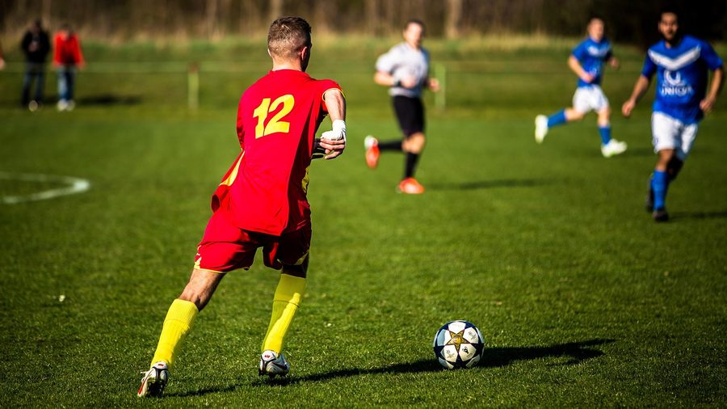

01
Touch hotspots
Jump straight to stretches where your team had the ball — with a timeline of possession zones painted right on the seek bar.
Upload a full-match recording. PolyFut runs computer vision locally to mark possession windows — then you review, log actions, and export AI commentary. All processes done over night.
Jump straight to stretches where your team had the ball — with a timeline of possession zones painted right on the seek bar.

Tag passes, shots, and defensive actions inside each window. Live hybrid stats — net, offense, defense, risk — update as you review.
Generate an optional AI summary with your own Groq API key — the request is the only thing that leaves your machine, and only when you ask.
Download the Windows app and open PolyFut from the Start menu — no browser tab required.
Import your match MP4. Analysis runs on your CPU or GPU, chunk by chunk — close the tab and resume anytime.
Tap a player wearing your colour on the first frame. The analyser learns your team from that single touch.
Click hotspots, log actions, and finish with a WPA chart, hybrid breakdown, and optional scout report.
Full-match analysis can take several hours on CPU. You can close the window and resume later — the server keeps running in the background until you discard the run.
Most match-analysis tools fall into two camps: team camera platforms built around a dedicated camera and a cloud subscription, and professional analyst/scouting platforms built for clubs with in-house filming crews. Both route your footage through an upload and a queue. PolyFut processes the video you already have, on the machine you already own.
Figures are indicative ranges drawn from publicly published pricing and processing-time documentation across camera-based and analyst-driven match-video platforms as of 2026; they vary by plan, connection speed, sport and region. PolyFut has no subscription or hardware requirement because analysis runs on hardware you already own.
Video on the left, controls on the right. Scrub the possession-zoned seek bar, log actions with one tap, and watch net / offense / defense / risk move live — then hit Finish for the full report.
Requires Windows 10 or later, 8 GB+ RAM recommended, several GB free disk for match videos. First launch downloads the YOLO detector weights (~22 MB).